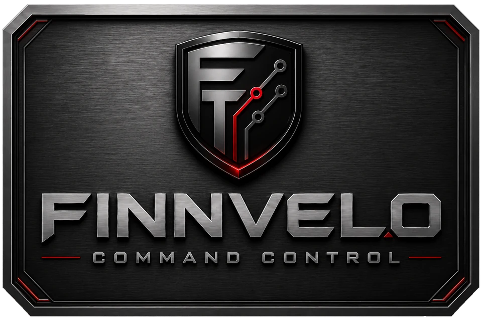
Tastenpult · Makro-Deck · Schnellzugriff
Finnvelo Command Control
Finnvelo Command Control ist ein frei belegbares Tastenpult für Windows – ein Makro-Deck, mit dem du Programme, Ordner, Webseiten, Windows-Funktionen, Musik, Archiv-Aktionen und selbst geschriebene Makros mit einem einzigen Klick startest - auf mehreren Seiten und optional über eine schlanke Dockleiste am Bildschirmrand.
Beschreibung
Command Control bündelt deine wichtigsten Programme, Ordner, Dateien, Webseiten und wiederkehrenden Abläufe in einem Tastenfeld. Jede Taste belegst du selbst – mit Titel, Untertitel, Bild und einer von dreizehn Aktionsarten. So entsteht ein persönliches Steuerpult für Windows, das genau zu deinem Arbeits- oder Spielalltag passt.
Die Tasten verteilst du auf bis zu 20 Seiten mit jeweils 5 bis 45 Tasten und gibst jeder Seite einen eigenen Namen – etwa „Alltag“, „Arbeit“ und „Werkzeuge“. Zwischen den Seiten wechselst du per Klick oder Funktionstaste. Auf Wunsch dockt sich das Fenster als schmale Leiste an einen Bildschirmrand an und blendet sich automatisch aus, bis du es brauchst.
Hinter einer Taste kann fast alles stecken: ein Programm (die App sucht installierte Programme und Verknüpfungen und übernimmt das passende Windows-Symbol), eine Datei, ein Ordner oder eine Webseite, die Steuerung deiner Musik mit Lautstärke, Wiedergabe, Wiederholen und Zufall, das Stummschalten von Ton oder Mikrofon, eine bestimmte Windows-Einstellung oder ein Windows-Systemprogramm. Dazu kommen die eingebauten Werkzeuge Archivar und Kopierer, das Erstellen eines Archivs mit einem Klick, die Kopierhilfe und Makros.
Makros schreibst du Zeile für Zeile: Tastenkombinationen, Text, Mausklicks, Pausen und das Wechseln zu einem Fenster. Achtzehn fertige Vorlagen – von „Kopieren und einfügen“ bis zum Screenshot-Ausschnitt – lassen sich übernehmen und anpassen, beim Tippen schlägt der Editor passende Bausteine vor, und ein eigenes Tutorial erklärt den Aufbau.
Die Kopierhilfe legt von einem Ordner oder einer Datei nummerierte Kopien an – „Projekt Kopie 1“, „Kopie 2“ und so weiter, reihum bis zur eingestellten Anzahl (ab Werk fünf, höchstens 99). Danach wird jeweils die älteste Kopie ersetzt. Unterordner oder Dateien, die nicht mitkopiert werden sollen, schließt du über Auswahlregeln aus.
Das Aussehen stellst du bis ins Detail ein: helles, dunkles oder eigenes Design, Transparenz, über 100 Schriftarten, Schriftgröße und Kontrast, Farben für Hintergrund, Kacheln, Eingaben und Symbole sowie die Deckkraft der Tastenbilder. Bedienen lässt sich das Programm in zehn Sprachen.
Frei belegbares Tastenfeld
Jede Taste bekommt Titel, Untertitel, Bild und Aktion. Programmsymbole und Webseiten-Symbole kommen automatisch, eigene Bilder und Bildvorlagen haben Vorrang.
Dreizehn Aktionsarten
Programm, Datei, Ordner, Webseite, Musik, Ton und Mikrofon stumm, Windows-Einstellungen, Systemprogramme, Archivar und Kopierer, Archiv erstellen, Kopierhilfe und Makro.
Makros schreiben und ausführen
Tastenkombinationen, Texte, Mausklicks und Pausen Zeile für Zeile. 18 fertige Vorlagen, Vorschläge beim Tippen und ein eingebautes Tutorial.
Seiten und Dockleiste
Bis zu 20 benannte Seiten mit je 5 bis 45 Tasten. Als Dockleiste oben, unten, links oder rechts – fest oder automatisch ausgeblendet.
Tastenkürzel
Seiten, Einstellungen, Andocken und Werkzeuge per Funktionstaste, dazu eigene Kürzel für einzelne Tasten – mit einer Taste oder einer Zwei-Tasten-Kombination.
Fehlerbericht per Sprache
Fehler beschreiben, Datei anhängen oder die Rückmeldung einfach einsprechen: Die Spracherkennung läuft lokal auf deinem Rechner. Heraus kommt ein ZIP-Bericht auf dem Desktop.
Sound, Mikrofon und Musik
Ton und Mikrofon per Taste stummschalten. Musikdateien, Musikordner oder Links abspielen – mit Lautstärke, Start und Stopp, Wiederholen, Zufall, vor und zurück.
Mehrsprachige Oberfläche
Bedienbar in Deutsch, Englisch, Französisch, Spanisch, Italienisch, Niederländisch, Polnisch, Tschechisch, Dänisch und Türkisch.
Archivar und Kopierer
Zwei eingebaute Werkzeuge, direkt aus der oberen Leiste: Archive erstellen und entpacken oder Dateien und Ordner kopieren.
Kopierhilfe
Nummerierte Kopien reihum – die älteste wird ersetzt. Auswahlregeln schließen Unterordner und Dateien aus.
Windows-Einstellungen per Taste
Sound, Anzeige, Netzwerk, Bluetooth, Drucker, Kameras, Laufwerke, Apps oder die Systemsteuerung direkt öffnen – und Windows-Systemprogramme samt Symbol.
Aussehen bis ins Detail
Helles, dunkles oder eigenes Design, Transparenz, über 100 Schriftarten, eigene Farben für vier Ebenen und Deckkraft der Tastenbilder.
Oberfläche
Die folgenden Ansichten zeigen Finnvelo Command Control 1.5.0 am PC und die Handy-App 1.4.1 mit einer erfundenen Beispielbelegung auf „MEIN-PC“. Ein Klick auf ein Bild öffnet es groß. Ein Video mit allen Abläufen findest du weiter unten unter „So funktioniert's“.
PC-Programm
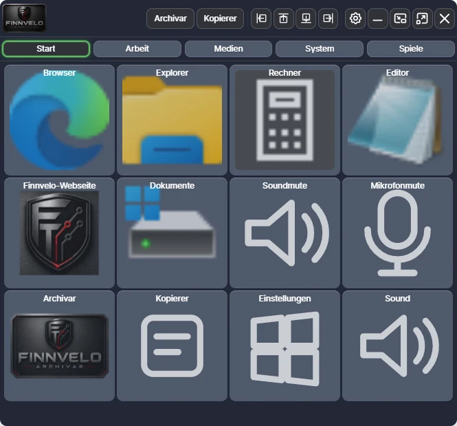
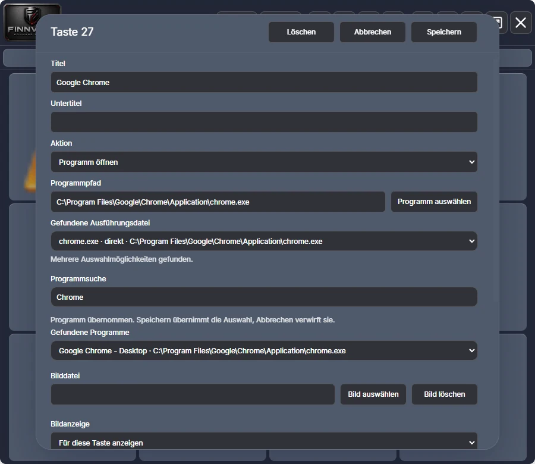
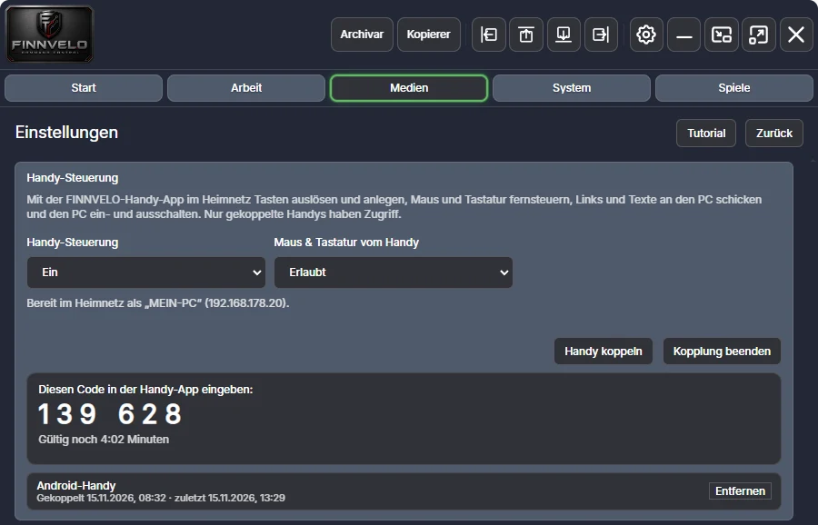
Handy-App
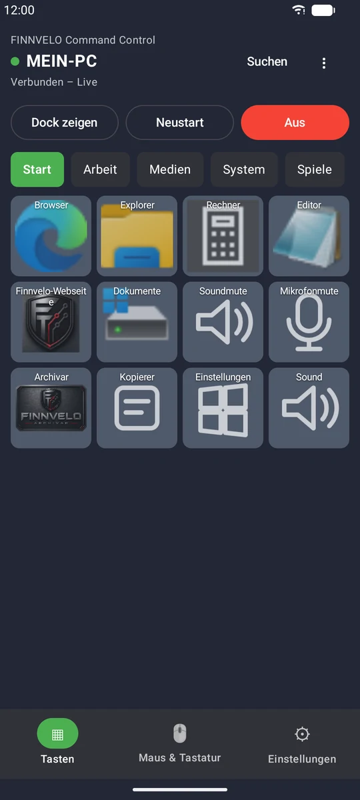
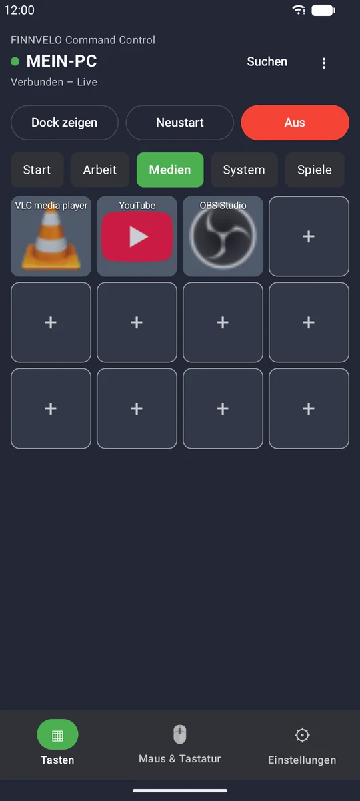
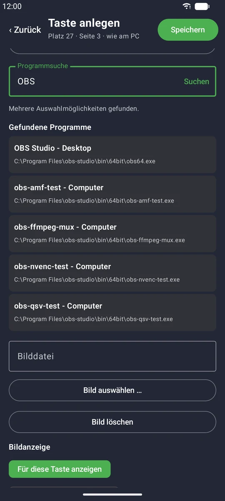
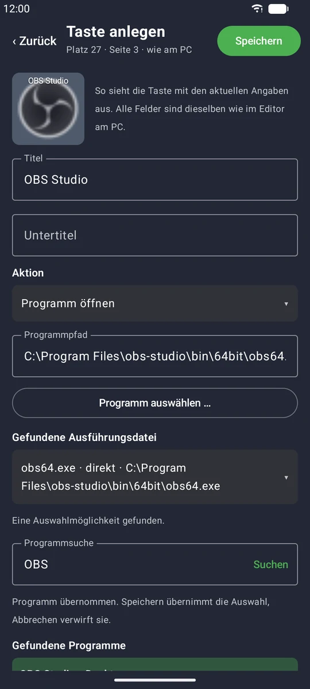
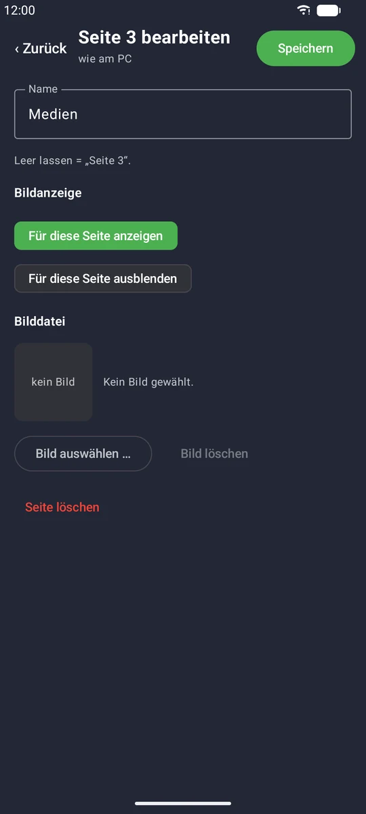
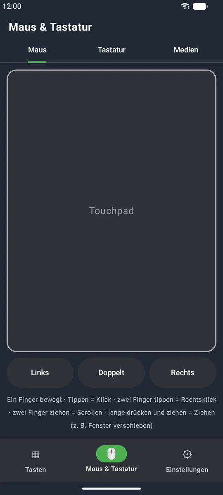
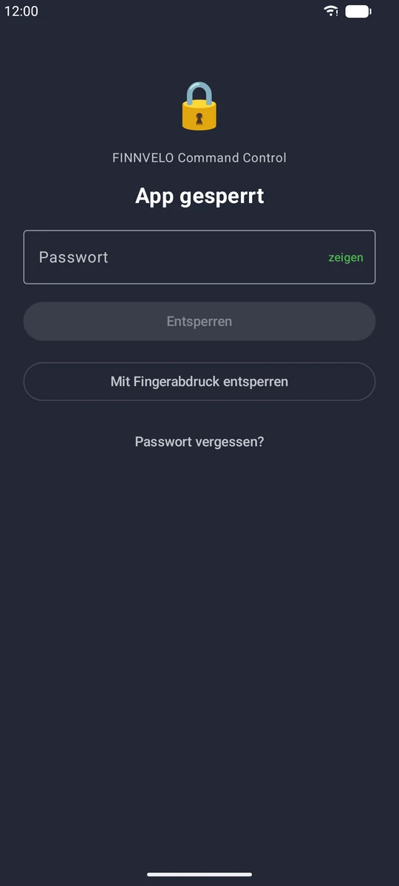
Einstellungen – das kannst du anpassen
Command Control lässt sich bis ins Detail an deinen Bildschirm und deine Gewohnheiten anpassen. Ein Überblick über alles, was die Einstellungen bieten:
Schnellstart
- SpracheZehn Sprachen von Deutsch bis Türkisch.
- Design-SchnellbauHelles, dunkles oder manuelles Design – auf Wunsch nach den Windows-Themen.
- AutostartMit oder ohne Windows starten, im Vordergrund oder im Hintergrund.
- Seitenanzahl und Tasten je Seite1 bis 20 Seiten mit je 5 bis 45 Tasten.
Fenster und Dock
- FensterdarstellungNicht transparent, Hauptfenster transparent oder auch die Einstellungen transparent.
- Logo / CoverDas Logo oben links ein- oder ausblenden.
- Dock / TaskleisteNormales Fenster oder oben, rechts, unten bzw. links andocken.
- Dock-VerhaltenFest anzeigen oder automatisch ausblenden, mit Aus- und Einblendzeit von sofort bis zehn Sekunden.
- Löschen-AbfrageVor dem Zurücksetzen einer Taste nachfragen oder nicht.
Anzeige auf den Tasten
- Bilder, Texte, Quelle, DatentypJeweils global ein- oder ausblenden; einzelne Tasten können abweichen.
- TextumbrücheLange Titel umbrechen lassen oder nicht.
- PlaylistensteuerungMit oder ohne Umrandung.
- BilddeckkraftVon 0 bis 100 Prozent, je Taste überschreibbar.
Schrift und Farben
- Schriftart, Schriftgröße, SchriftkontrastÜber 100 Schriftarten, Größe 8 bis 24, Kontrast von hell bis dunkel.
- Farben in vier EbenenHintergrund, Kachel- und Panelflächen, Eingaben und Tasten sowie Symbolfarbe – jeweils mit eigenen hellen und dunklen Farbwerten.
- Button-Hintergrund je TasteEinzelne Tasten manuell einfärben, mit eigener Transparenz.
Auflösung und Tastensteuerung
- AuflösungAutomatisch an den Monitor angepasst oder fest gewählt.
- Kürzel für SeitenF1 bis F10 für die ersten zehn Seiten, weitere frei belegbar.
- Kürzel für Fenster und WerkzeugeEinstellungen, Originalgröße, Maximieren, Andocken an alle vier Ränder, Archivar und interne Werkzeuge.
- Manuelle Button-ShortcutsEigene Kürzel für einzelne Tasten, mit einer Taste oder einer Zwei-Tasten-Kombination. Die Kürzel wirken, solange das Fenster aktiv ist.
Fehlerbericht und Wartung
- FehlerberichtBeschreibung, Dateianhang und Sprachaufnahme, die lokal in Text umgewandelt wird. Gespeichert als ZIP auf dem Desktop.
- TutorialErklärt alle Bereiche des Programms Schritt für Schritt.
- Zurücksetzen und WartungGetrennt von den übrigen Einstellungen, damit nichts versehentlich verloren geht.
Besondere Vorteile
- Eigenständiges Windows-Programm mit frei belegbarem Tastenfeld
- Dreizehn Aktionsarten an einer zentralen Stelle
- Makro-Editor mit 18 Vorlagen, Vorschlägen und Tutorial
- Bis zu 20 benannte Seiten und eine optionale Dockleiste
- Tastenkürzel für Seiten, Fenster und einzelne Tasten
- Eigene Tastenbilder, Bildvorlagen und freie Benennung
- Fehlerbericht per Sprache – die Erkennung läuft lokal
- Sound-, Mikrofon- und Musiksteuerung
- Helles, dunkles und eigenes Design, zehn Sprachen
- Updatefähiger Installer, Autostart nur auf Wunsch
- Archivar und Kopierer gleich eingebaut
- Kein Konto und keine Anmeldung
Zielgruppe
Finnvelo Command Control richtet sich an alle, die häufig zwischen Programmen, Ordnern, Webseiten und Windows-Funktionen wechseln und wiederkehrende Schritte schneller erledigen möchten.
Besonders nützlich ist es für Power-User, Gamer, Streamer, Content-Ersteller und Vielarbeiter, die sich ein persönliches Steuerpult für ihren Alltag einrichten wollen.
- Wer im Büro immer dieselben Ordner, Vorlagen und Programme öffnet und sich die Klickwege sparen will.
- Streamer und Gamer, die Ton, Mikrofon und Musik mit einem Klick steuern möchten – ohne teure Zusatzhardware.
- Alle, die regelmäßig Sicherungskopien oder Archive anlegen und das auf eine Taste legen wollen.
- Wer wiederkehrende Tastenfolgen als Makro festhalten möchte, ohne programmieren zu lernen.
Daten und Datenschutz
Command Control braucht kein Konto und keine Anmeldung. Deine Belegung und alle Einstellungen speichert das Programm als Datei in deinem Benutzerordner unter AppData – nicht im Browser und auf keinem Server.
Ins Netz geht das Programm für Updates – es fragt bei finnveloprogramme.com nach einer neuen Fassung und lädt sie von GitHub herunter – und für die Symbole von Webseiten-Tasten: Diese werden über den Symboldienst von Google abgerufen, dabei wird der Name der Webseite übertragen. Eigene Bilder auf der Taste ersetzen das automatische Symbol. Die Spracherkennung für Fehlerberichte läuft vollständig auf deinem Rechner, und ein Fehlerbericht entsteht als ZIP-Datei auf deinem Desktop – verschickt wird er nur, wenn du ihn selbst versendest.
Maus und Tastatur vom Handy lassen sich am PC unter Einstellungen → Handy-Steuerung sperren. In der Handy-App kannst du eine App-Sperre mit Passwort einschalten – die App speichert ihre Daten dann verschlüsselt.
So funktioniert's
Ein Video zeigt, wie du Command Control bedienst – erst am PC, dann in der Handy-App.
Musik: „Cipher“ – Kevin MacLeod (incompetech.com), Lizenz CC BY 3.0, Quelle: Wikimedia Commons; gekürzt, ein- und ausgeblendet.
Download (Android-App)
Handy-App, Fassung 1.5.0
FINNVELO Command Control für Android 11 oder neuer (APK, rund 2,3 MB). Sie steuert dein Command Control am PC – für alle Funktionen brauchst du das PC-Programm ab Fassung 1.5.9 (mit älteren Fassungen läuft die App eingeschränkt weiter).
Letztes Update: 15.11.2026
Download startenWas die App kann
Die Seiten und Tasten deines PCs erscheinen auf dem Handy – wie am PC mit Bildern, Farben und Statusanzeigen (stumm/aktiv) live; zwischen den Seiten wischst du. Antippen löst die Taste am PC aus. Neue Tasten legst du direkt am Handy an: ein Programm (mit Suche auf dem PC), eine Webseite, einen Ordner oder eine Datei – mit Dateiauswahl am PC. Das Handy dient außerdem als Touchpad und eigene Tastatur (im Querformat nebeneinander), zeigt, was am PC läuft, steuert Lautstärke, Playlisten und Hörbücher gezielt und schickt Links und Texte über „Teilen → An PC senden“ an den PC. Dazu Suche über alle Tasten, Einstellungen für Handy und PC-Programm, Dock anzeigen, den PC sperren, herunterfahren oder neu starten (mit Rückfrage) und ihn per Wake-on-LAN einschalten. Die Verbindung bleibt im WLAN bestehen, neue Fassungen lädt die App selbst.
Neu in Fassung 1.5.0
Ab 1.5.0 aktualisiert sich die App selbst, ohne Neuinstallation: Neue Fassungen werden geladen, geprüft und sofort übernommen. Dies ist das letzte Update über den Installer. Die Oberfläche aktualisiert sich selbst (aktuell 1.5.10).
Neu: Anleitung, wie man Wake-on-LAN im BIOS einschaltet, damit der PC per Handy startet – in der App unter Einstellungen → „PC einschalten“.
Neu in App 1.4.1 und PC-Programm 1.4.3
- Freiwillige App-Sperre mit Passwort, auf Wunsch zusätzlich mit Fingerabdruck. Die Daten der App werden dann verschlüsselt gespeichert, und das App-Symbol zeigt keine Tasten-Verknüpfungen mehr.
- Zurücksetzen der Sperre mit zwei von vier Sicherheitsfragen oder dem Master-Key, dazu ein Sicherheitszertifikat zum Ausdrucken.
- Tasten am Handy bearbeiten – vollständig wie am PC: dieselben Felder wie im PC-Editor, also alle Aktionen, Programmsuche, Dateiauswahl auf dem PC, Bildvorlagen, Übertragen, Auswahlregeln für Archiv und Kopierhilfe sowie die Makro-Anleitung.
- Seiten am Handy bearbeiten: lange auf den Seitennamen drücken, dann Name und Bild ändern.
- Verständlichere Meldungen, wenn der PC nicht erreichbar ist.
- Am PC: Die Programmsuche ist deutlich schneller und findet bei Verknüpfungen das richtige Ziel; die Dock-Leiste findet ihren Monitor auch nach einem Neustart wieder.
Tasten-Editor und Seiten am Handy brauchen am PC Command Control 1.4.3 (mit 1.4.2 fehlen nur Auswahlregeln und Makro-Anleitung) – alles andere läuft auch mit älteren PC-Fassungen.
So verbindest du Handy und PC
- Am PC Command Control ab Fassung 1.5.9 installieren (Download unten). Mit älteren Fassungen läuft die App eingeschränkt.
- Handy und PC im selben Heimnetz – den PC am besten per Kabel; zum Einschalten per Handy ist das nötig.
- Am PC: Einstellungen → Handy-Steuerung → „Ein“ → „Handy koppeln“. Den angezeigten 6-stelligen Code in der App eingeben.
Beim Installieren fragt Android bzw. Play Protect einmal nach, weil die App nicht aus dem Play Store kommt: „Ohne Prüfung installieren“ bzw. „Scannen“ wählen.
Download (PC-Version)
Fassung 1.5.10
Installationsprogramm für Windows, mit Handy-Steuerung für die App – ab dieser Fassung aktualisiert sich das Programm selbst, laufende Programme lassen sich vom Handy aus schließen, die Programmsuche findet auch Windows-Apps und alle Startmenü-Einträge, und mehrere markierte Dateien kommen per Rechtsklick in ein gemeinsames Archiv. Einen Autostart richtet Command Control nur ein, wenn du ihn in den Einstellungen selbst einschaltest.
PC-Version herunterladenNeu in Fassung 1.5.10
Impressum in den Einstellungen, mit Link zur Datenschutzerklärung – im PC-Programm und in der App.
Neu in Fassung 1.5.9
Bildschirme beim Herunterfahren automatisch ausschalten und beim Start wieder einschalten – Schieberegler in den Einstellungen unter „Bildschirme“ und in der App.
Neu in Fassung 1.5.8
Windows-Apps wie Paint, Rechner oder Fotos aus der Programmsuche starten jetzt richtig und bekommen ihr echtes Symbol.
Neu in Fassung 1.5.7
„Bildschirme am PC aus“ schaltet die Monitore jetzt wirklich aus statt nur in den Energiesparmodus (über DDC/CI, wie mit dem Knopf am Monitor), „Bildschirme am PC an“ wieder ein. Monitore ohne DDC/CI gehen wie bisher in den Energiesparmodus.
Neu in Fassung 1.5.6
- Webseiten, die du über eine Taste geöffnet hast (z. B. YouTube), lassen sich vom Handy aus wieder schließen – nur die Seite, der Browser bleibt offen.
- Die Bildschirme am PC lassen sich vom Handy aus- und wieder einschalten; auch Ausschalten und Energiesparmodus vom Handy funktionieren wieder.
Neu in Fassung 1.5.5
- Die Audioauswahl zeigt jetzt alle Geräte einzeln mit vollem Namen – z. B. jeden Monitor-Lautsprecher und „Chat Sound“/„7.1 Game Sound“ getrennt – und lädt schneller.
- Umlaute in Gerätenamen stimmen, Mikrofon-Tasten zeigen ein Mikrofon-Symbol.
- Die Handy-App bekommt alle Tastenbilder.
Neu in Fassung 1.5.4
Die Bedienknöpfe der Playlist-Tasten (Play/Pause, Stopp, Weiter, Werbung überspringen, Lautstärke …) gibt es jetzt auch in der Handy-App – genau wie am PC.
Neu in Fassung 1.5.3
- Das Programm aktualisiert sich künftig selbst – mit Windows-Benachrichtigung und Knopf in den Einstellungen.
- Audioausgabe und -eingang wechseln funktioniert wieder.
- Im Tasten-Editor reagieren Löschen, Abbrechen und Speichern zuverlässig auf die Maus; Umbenennen vom Handy wird übernommen.
Neu in Fassung 1.5.2
Laufende Programme lassen sich jetzt vom Handy aus schließen: Läuft das Programm einer Taste, zeigt die Taste in der Handy-App unten einen Schließen-Knopf – wie das ✕ am Fenster, auf Wunsch auch sofort beenden.
Neu in Fassung 1.5.0
- Archivar wie das eigenständige Programm: Mehrere Dateien und Ordner im Explorer markieren, Rechtsklick „Mit Finnvelo Archivar archivieren“ – alles landet in einem Archiv, auch bei mehr als 15 markierten Dateien.
- Programmsuche am PC und in der Handy-App deutlich schneller und vollständiger: Sie findet jetzt auch Windows-Apps (z. B. Paint, Microsoft Teams) und alle Startmenü-Einträge, Treffer meist in unter einer Sekunde.
- Tasten-Editor: kein veralteter Hinweis mehr beim Öffnen.
Die Handy-App steht bei Fassung 1.5.0.
Hinweis
Windows meldet bei unbekannten Programmen einen Warnhinweis. Über „Weitere Informationen“ → „Trotzdem ausführen“ lässt sich der Start fortsetzen.